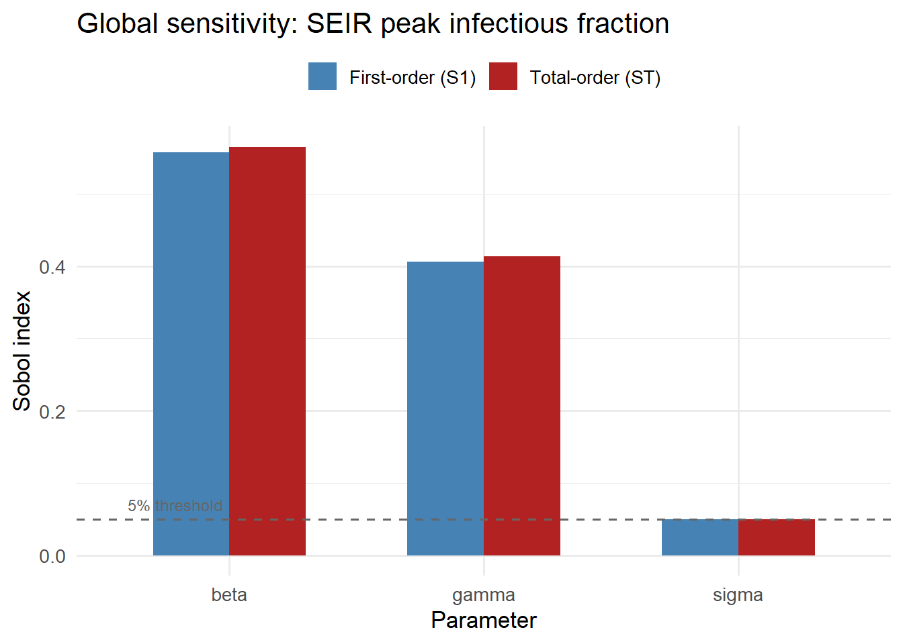
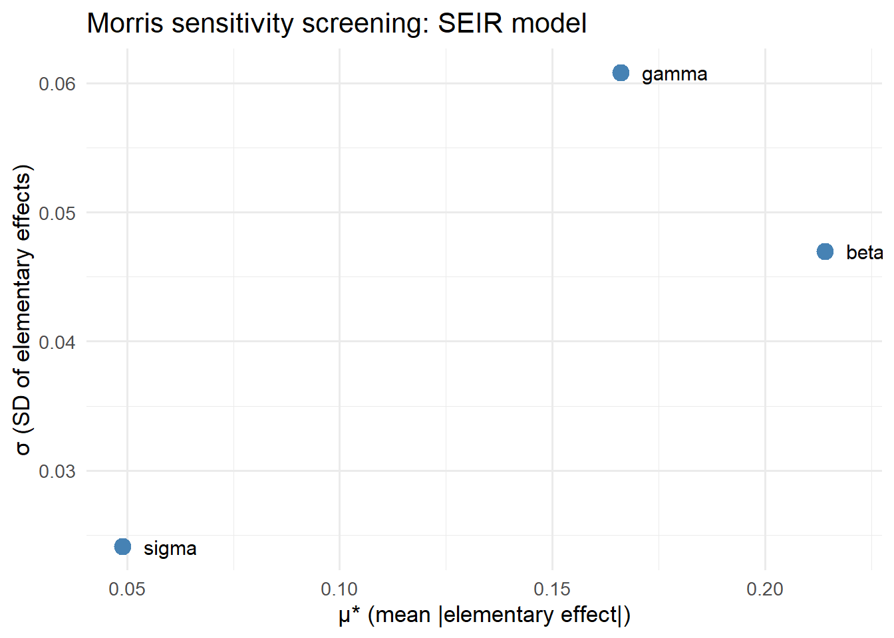

# SEIR model returning peak infectious count
seir_peak <- function(beta, sigma, gamma,
N = 100000, I0 = 50, days = 120) {
S <- N - I0; E <- 0; I <- I0; R <- 0
peak <- I
for (d in seq_len(days)) {
new_e <- beta * S * I / N
new_i <- sigma * E
new_r <- gamma * I
S <- S - new_e; E <- E + new_e - new_i
I <- I + new_i - new_r; R <- R + new_r
if (I > peak) peak <- I
}
peak / N # return as fraction
}Global Sensitivity Analysis as a Billable Model Audit Service
Which parameters drive your epidemic forecast? Sobol indices and Morris screening turn model uncertainty into a professional deliverable. Skill 2 of 20.
business skills
sensitivity analysis
Sobol
epidemic modeling
R
1 The business case
A health department client asks: “You say \(R_0 = 1.8\), but how sensitive is your 14-day forecast to that estimate? What if it’s actually 2.2?” Without sensitivity analysis you can only shrug. With it, you can hand them a one-page report quantifying exactly how much each uncertain parameter moves the forecast needle.
Global sensitivity analysis (SA) (1,2) answers: which inputs explain most of the output variance? This is a different question from “what happens if I change \(\beta\) by 10%” (local sensitivity). Global SA samples the entire input space and decomposes variance into contributions from each parameter and their interactions.
It is also a distinct, defensible deliverable — a model audit that commands consulting fees separate from the core subscription.
2 Variance-based (Sobol) indices
For a model \(Y = f(X_1, \ldots, X_k)\), the first-order Sobol index for parameter \(X_i\) is:
\[S_i = \frac{V_{X_i}[\,E_{\mathbf{X}_{\sim i}}(Y \mid X_i)\,]}{V(Y)}\]
It measures the fraction of output variance explained by \(X_i\) alone. The total-order index \(S_{T_i}\) captures \(X_i\)’s contribution including all interactions with other parameters:
\[S_{T_i} = 1 - \frac{V_{X_{\sim i}}[\,E_{X_i}(Y \mid \mathbf{X}_{\sim i})\,]}{V(Y)}\]
When \(S_{T_i} \gg S_i\), interactions dominate. Both indices lie in \([0,1]\) and \(\sum_i S_i \leq 1\) (3).
3 Implementing Sobol indices in R
We compute Sobol indices for peak infected count in an SEIR model with three uncertain inputs: \(\beta\), \(\sigma\) (incubation rate), and \(\gamma\) (recovery rate).
set.seed(2024)
# Parameter ranges (uniform priors)
ranges <- list(
beta = c(0.20, 0.55),
sigma = c(1/8, 1/3),
gamma = c(1/10, 1/5)
)
# Saltelli (2010) estimator needs two independent base samples A, B
n <- 4000
A <- sapply(ranges, function(r) runif(n, r[1], r[2]))
B <- sapply(ranges, function(r) runif(n, r[1], r[2]))
# Evaluate model on A and B
yA <- mapply(seir_peak, A[,"beta"], A[,"sigma"], A[,"gamma"])
yB <- mapply(seir_peak, B[,"beta"], B[,"sigma"], B[,"gamma"])
# For each parameter i, create AB_i: A with column i replaced by B
sobol_indices <- function(yA, yB, A, B, ranges) {
k <- ncol(A)
nms <- colnames(A)
S <- numeric(k); ST <- numeric(k)
Vy <- var(c(yA, yB))
for (i in seq_len(k)) {
AB_i <- A
AB_i[, i] <- B[, i]
yABi <- mapply(seir_peak,
AB_i[,"beta"], AB_i[,"sigma"], AB_i[,"gamma"])
# Jansen estimator (more robust than Saltelli original)
S[i] <- (var(yB) - mean((yB - yABi)^2) / 2) / Vy
ST[i] <- mean((yA - yABi)^2) / (2 * Vy)
}
data.frame(parameter = nms,
S1 = pmax(0, S),
ST = pmax(0, ST))
}
idx <- sobol_indices(yA, yB, A, B, ranges)
print(idx) parameter S1 ST
1 beta 0.55765633 0.56522359
2 sigma 0.04961737 0.04964628
3 gamma 0.40615158 0.41383019library(ggplot2)
idx_long <- rbind(
data.frame(parameter = idx$parameter, index = "First-order (S1)",
value = idx$S1),
data.frame(parameter = idx$parameter, index = "Total-order (ST)",
value = idx$ST)
)
ggplot(idx_long, aes(x = reorder(parameter, -value),
y = value, fill = index)) +
geom_col(position = "dodge", width = 0.6) +
scale_fill_manual(values = c("First-order (S1)" = "steelblue",
"Total-order (ST)" = "firebrick"),
name = NULL) +
geom_hline(yintercept = 0.05, linetype = "dashed", colour = "grey40") +
annotate("text", x = 0.6, y = 0.07,
label = "5% threshold", hjust = 0, size = 3.2, colour = "grey40") +
labs(x = "Parameter", y = "Sobol index",
title = "Global sensitivity: SEIR peak infectious fraction") +
theme_minimal(base_size = 13) +
theme(legend.position = "top")
4 Morris screening for quick triage
When you have many parameters (20+), full Sobol estimation is expensive. The Morris method (2) is a cheap rank-order screen: run the model \(r(k+1)\) times (rather than \(2nk\)), and compute the mean \(\mu^*\) and standard deviation \(\sigma\) of elementary effects.
- High \(\mu^*\): parameter has large influence
- High \(\sigma\): parameter has nonlinear effects or interactions
morris_screen <- function(model_fn, ranges, r = 20, delta = 0.5) {
k <- length(ranges)
nms <- names(ranges)
EE <- matrix(0, nrow = r, ncol = k)
for (rep in seq_len(r)) {
# Random base point in [0, 1-delta]
x0 <- sapply(seq_len(k), function(i) runif(1, 0, 1 - delta))
# Evaluate at base
params0 <- mapply(function(x, r) r[1] + x * diff(r), x0, ranges)
y0 <- do.call(model_fn, as.list(setNames(params0, nms)))
# Randomly permute dimensions and apply +delta one at a time
perm <- sample(k)
x_current <- x0
for (j in perm) {
x_new <- x_current
x_new[j] <- x_current[j] + delta
params_new <- mapply(function(x, r) r[1] + x * diff(r),
x_new, ranges)
y_new <- do.call(model_fn, as.list(setNames(params_new, nms)))
EE[rep, j] <- (y_new - y0) / delta
y0 <- y_new
x_current <- x_new
}
}
data.frame(
parameter = nms,
mu_star = colMeans(abs(EE)),
sigma_ee = apply(EE, 2, sd)
)
}
morris_res <- morris_screen(seir_peak, ranges, r = 50)
ggplot(morris_res, aes(x = mu_star, y = sigma_ee,
label = parameter)) +
geom_point(size = 4, colour = "steelblue") +
geom_text(size = 4, nudge_x = 0.005, hjust = 0) +
labs(x = "μ* (mean |elementary effect|)",
y = "σ (SD of elementary effects)",
title = "Morris sensitivity screening: SEIR model") +
theme_minimal(base_size = 13)
5 Packaging as a deliverable
A sensitivity analysis report for a client should include:
- Parameter ranges — what assumptions went into the SA
- Sobol indices table with confidence intervals (bootstrap)
- Ranking narrative — “transmission rate \(\beta\) explains 78% of forecast variance”
- Implications — which parameters are worth measuring better vs. fixing at nominal values
The sensitivity R package provides production-ready estimators with confidence intervals. The SALib Python library is the equivalent for Python-based models.
6 References
1.
Saltelli A, Tarantola S, Campolongo F, Ratto M. Making best use of model evaluations to compute sensitivity indices. Computer Physics Communications. 2002;145(2):280–97. doi:10.1016/S0010-4655(02)00280-1
2.
Marino S, Hogue IB, Ray CJ, Kirschner DE. A methodology for performing global uncertainty and sensitivity analysis in systems biology. Journal of Theoretical Biology. 2008;254(1):178–96. doi:10.1016/j.jtbi.2008.04.011
3.
Saltelli A, Annoni P, Azzini I, Campolongo F, Ratto M, Tarantola S. Variance based sensitivity analysis of model output. Design and estimator for the total sensitivity index. Computer Physics Communications. 2010;181(2):259–70. doi:10.1016/j.cpc.2009.09.018